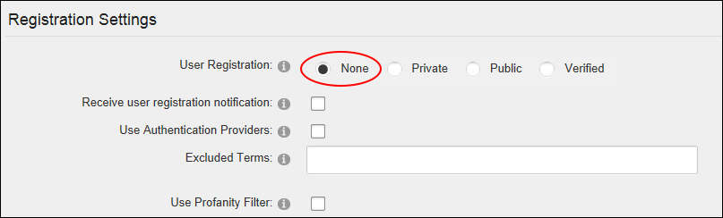

Disabling User Registration
How to disable user registration and prevent visitors from registering on your site by removing the Register link from the site pages and the Account Login module.
- Navigate to Admin >
 Site Settings.
Site Settings.
-
Select the User Account Settings tab.
- Expand the Registration Settings section.
- At User Registration, select None.

-
Click the Update button.